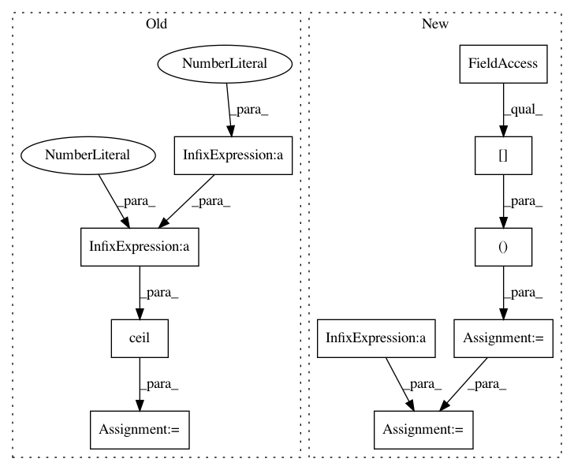

8f388d6ff37b3573a284078103906a1dc8ab27e3,linearmodels/iv/covariance.py,KernelCovariance,s,#KernelCovariance#,514
Before Change
if kernel in ("newey-west", "bartlett"):
bw = ceil(4 * (nobs / 100) ** (2 / 9))
elif kernel in ("andrews", "quadratic-spectral", "qs"):
bw = ceil(4 * (nobs / 100) ** (2 / 25))
else:
bw = ceil(4 * (nobs / 100) ** (4 / 25))
self._bandwidth = bw = int(bw)
w = self._kernels[kernel](bw, nobs - 1)
After Change
pinvz = self._pinvz
xhat = z @ (pinvz @ x)
xhat_e = xhat * eps
kernel = self.config["kernel"]
bw = self.config["bandwidth"]
if bw is None:
self._auto_bandwidth = True
from linearmodels.utility import has_constant
const, loc = has_constant(xhat)
sel = ones((xhat.shape[1], 1))
if const:
sel[loc] = 0
scores = xhat_e @ sel
bw = kernel_optimal_bandwidth(scores, kernel)
self._bandwidth = bw = int(bw)
w = self._kernels[kernel](bw, nobs - 1)
In pattern: SUPERPATTERN
Frequency: 3
Non-data size: 10
Instances
Project Name: bashtage/linearmodels
Commit Name: 8f388d6ff37b3573a284078103906a1dc8ab27e3
Time: 2017-03-15
Author: kevin.k.sheppard@gmail.com
File Name: linearmodels/iv/covariance.py
Class Name: KernelCovariance
Method Name: s
Project Name: albermax/innvestigate
Commit Name: d9aec7b8c8424e4392320358dfd30b25b13f992a
Time: 2018-10-21
Author: philipp.seegerer@tu-berlin.de
File Name: innvestigate/tools/perturbate.py
Class Name: Perturbation
Method Name: compute_perturbation_mask
Project Name: albermax/innvestigate
Commit Name: 2b42c95e4fa7c4d4e61cdf4f64655efb7667b757
Time: 2018-10-11
Author: philipp.seegerer@tu-berlin.de
File Name: innvestigate/tools/perturbate.py
Class Name: Perturbation
Method Name: compute_perturbation_mask